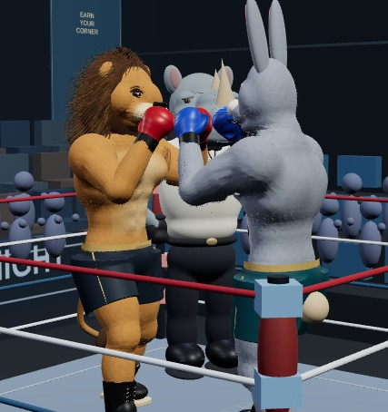
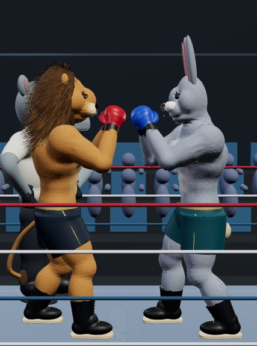
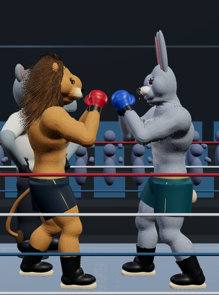
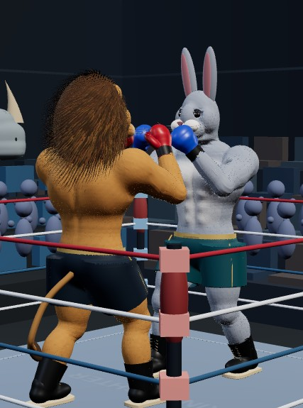
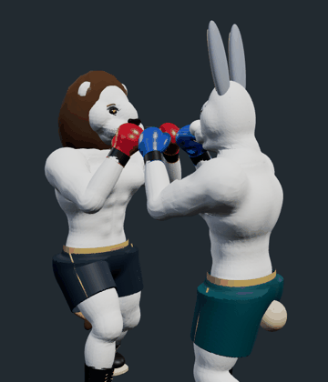
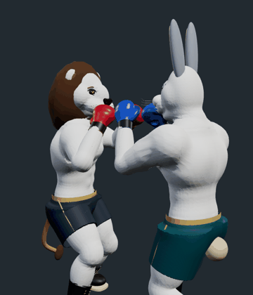
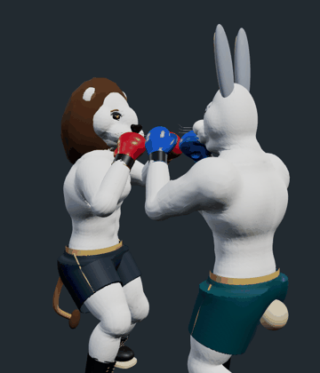
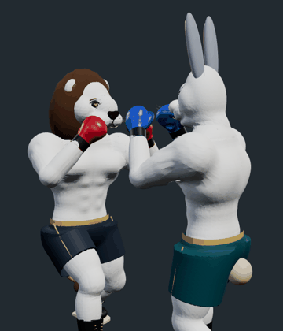
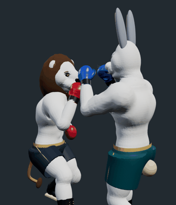

Left: published R83. Right: corrected arm frame and rebaked shoulder. Actual app renders; no generated art.




Matched camera and sampled 100 ms frames. Coat/mane ribbons, scenery and shadows hidden; body material neutralized to expose surface rotation. These are joint diagnostics, not beauty renders or an FPS measurement.





The isolated elbow test measured 90° unwanted upper-arm roll before, 0° after. Physical-phone performance remains unverified.